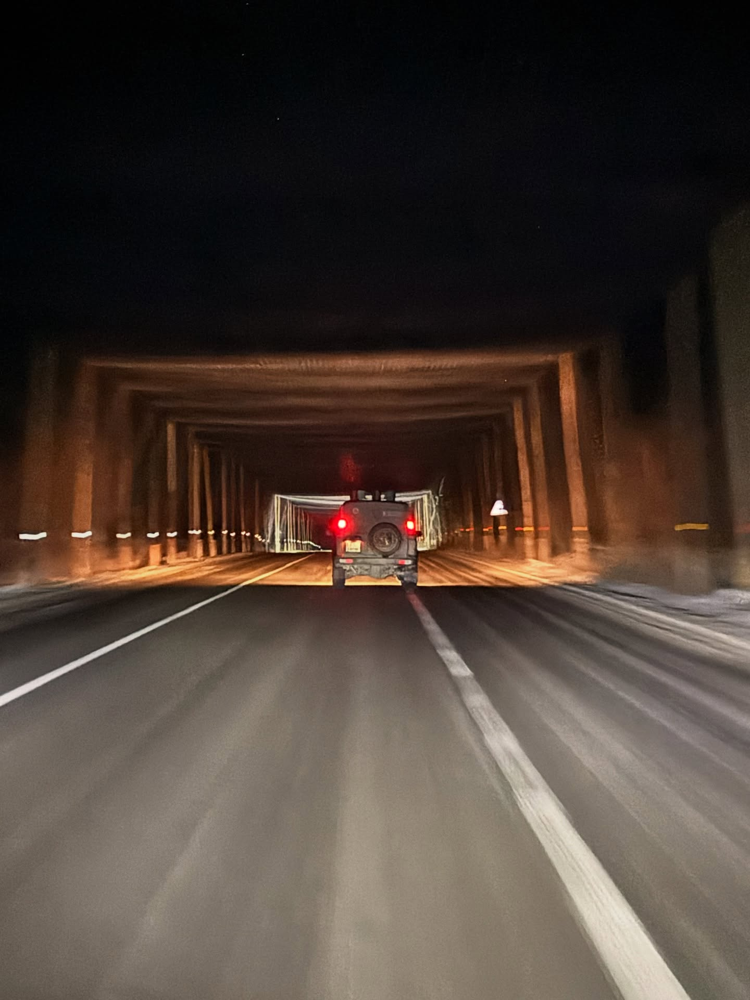
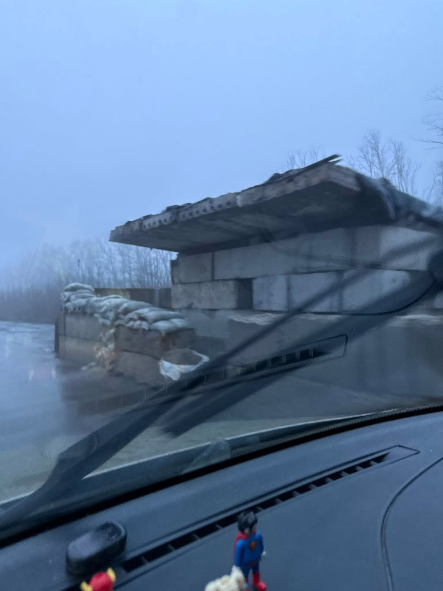

Слова з дороги
і допомога.
Прості пояснення гуманітарних понять і репортажі з України. Розмовні терміни можуть мати різне значення залежно від контексту.
Це підвал, де під час окупації проживало майже 100 людей. Там загинула одна людина. Там же народилася дитина.
Ми зупинялися там не раз. Ми спали в підвалі з переляканими бабусями, а вранці нас розбудили вибухи КАБ.
Це не вигадка чи сцена з фільму. Таким було життя людей поруч – коли ми могли сидіти в безпеці своїх домівок і пити чай. За цими словами стоять справжні людські історії.

- Сигнал тривоги/тривоги
- Попередження, надане, наприклад, сиреною, телефоном, радіо чи офіційним каналом. Почувши його, перевірте місцеві оголошення та дотримуйтесь інструкцій служб.
- Повітряна сигналізація
- Офіційне попередження про можливу повітряну загрозу. Залежно від місцевих правил це може означати, що вам потрібно піти в притулок або залишитися в безпечному місці.
- Безпека
- Це не одноразова акція чи гарантія того, що нічого поганого не трапиться. Це процес: розпізнавання загроз, підготовка простих планів, використання перевіреної інформації та адаптація рішень до ситуації. Він включає як захист від прямого нападу, так і підготовку до перебоїв у постачанні електроенергії, опалення, води чи зв’язку.
- Цивільна безпека
- Діяльність, яка допомагає захистити життя та здоров'я людей, які не беруть участі в бойових діях. Це включає в себе знання місцевих тривог, план зв’язку з близькими та знання того, де шукати поточні оголошення. Це не вимагає спеціальних навичок або засобів виживання.
- У нашій команді це загальна назва для приймача, який виявляє деякі радіосигнали, пов’язані з дронами, і може попереджати про загрозу. Він не виявляє кожен дрон і не замінює укриття чи правил безпеки. Після попередження просимо дотримуватись встановленого плану та місцевих оголошень.

Детектор, встановлений у машині команди.
- Цільова пожертва
- Платіж, призначений для вказаної мети. Перед оплатою варто ознайомитися з описом колекції та правилами використання коштів. Дрон
- Дрон
- Розмовний термін для безпілотного літального апарату. Безпілотники відрізняються за розміром, дизайном і призначенням: їх можна використовувати для спостереження, фотозйомки, транспортування або військових дій. Саме слово не вказує, для чого використовується конкретний пристрій.

На фото волонтер тримає крило одного з дронів. Безпілотні літальні апарати мають різні конструкції і можуть виглядати по-різному. - Оптоволоконний дрон
- Дрон, яким керує тонкий оптоволоконний кабель, який розмотується під час польоту, замість звичайного радіозв’язку. Це може зробити глушіння радіосигналу неефективним, але це не означає, що він захищений від усіх загроз.
- Евакуація
- Організований виїзд із небезпечного місця та переміщення до безпечнішого місця. Він може бути тимчасовим або постійним. Поради щодо евакуації повинні надходити від місцевої влади.
- Ударна хвиля (вибухова хвиля)
- Раптова зміна тиску, яка поширюється від точки вибуху. Це можна відчути як раптовий, сильний удар, який проходить через тіло. Це дуже неприємний досвід; Хвиля може пошкодити, зокрема, легені, слух і внутрішні органи, а у важких випадках призвести до смерті. Ефекти залежать, зокрема, від: сили вибуху, відстані та щитів.
- FPV
- Абревіатура для "вигляд від першої особи". Оператор керує маленьким, спритним дроном, спостерігаючи за зображенням із камери пристрою. В умовах війни дрони FPV використовуються для ураження цілей, у тому числі транспортних засобів. Це визначення методу спостереження та контролю, а не окрема модель.
- Людське сафарі
- Термін, що описує полювання на людей (цивільних) за допомогою дронів і повсякденний страх нападу. Це цивільний, а не юридичний термін. Звіт ООН з Херсона ↗ КАБЕЛЬ
- Абревіатура російського «корректируемая авиационная бомба», тобто виправлена авіаційна бомба. У репортажах з війни в Україні цим терміном називають також бомби, скинуті з літаків і виправлені в польоті. Буває, що приїжджаємо і ночуємо в містах, де за одну ніч падає близько 40 таких бомб.
Корисне навантаження залежить від варіанту - в деяких бомбах воно може становити близько 250 кг. Нещодавно також була скинута бомба класу FAB-3000 з модулем наведення. Його загальна вага становить близько 3 тонн, але сама вибухівка важить менше - близько 1,2-1,4 тонни. АрмІнформ: інформація про ФАБ-3000 ↗ - Зона вбивства
- У військовій термінології це місце, де зосереджується вогонь під час засідки. У звітах Саліка ми також використовуємо цю назву для територій поблизу лінії фронту, приблизно до 25 км. Це наближення – реальний масштаб загрози залежить від місця та ситуації, а не від одного фіксованого кордону. Безпілотники також можуть атакувати набагато далі, навіть приблизно за 50 км від лінії фронту. Ми також досягаємо таких територій.
- Гуманітарний конвой
- Група транспортних засобів, що перевозять гуманітарну допомогу або персонал. Організація поїздки залежить від домовленостей і поточних умов безпеки.
- Лінія фронту
- Традиційне визначення території, на якій зустрічаються ворогуючі сторони. Це не постійна або завжди точна лінія на карті; може змінюватися, і сама по собі відстань до нього не визначає рівень загрози.
- Екстрений зв'язок
- Узгоджений спосіб зв’язатися з близькими, коли звичайні дзвінки не працюють. Це може включати призначення контактної особи, резервний канал зв’язку та визначення місця пересилання повідомлення.
- Медевакуація
- Абревіатура від "медична евакуація" - медична евакуація пораненої або хворої людини до місця, де вона може отримати відповідну допомогу.
- Вибухівка, що не вибухнула
- Боєприпаси або інший небезпечний предмет, який не вибухнув. Не торкайтеся його і не наближайтеся до нього. З безпечної відстані повідомте про знахідку службам.
- Цивільний захист
- Підготовка та дії служб, установ і спільнот для захисту людей від загроз. Вони можуть включати попередження, укриття, евакуацію, порятунок і надання основних послуг.
- Цивільна особа
- Особа, яка не належить до збройних сил чи організованої збройної групи. Цивільне населення захищене міжнародним гуманітарним правом від наслідків військових дій.
- Людина в кризі
- Особа, чия безпека, здоров'я або основні умови життя серйозно постраждали внаслідок конфлікту, насильства, лиха чи іншої складної ситуації. Цей термін описує ситуацію та потреби, а не людину в цілому.
- Пряма довідка
- Надання необхідних речей, послуг або підтримки людям, які їх потребують. Ефективна допомога враховує голос і ситуацію цих людей і змінюється разом з їхніми потребами.
- Гуманітарна допомога
- Підтримка людей, які постраждали від війни, лиха чи іншої кризи. Це може включати їжу, воду, ліки, притулок, транспорт та інформацію. Його мета – врятувати життя, полегшити страждання та захистити гідність.
- Допомога в натуральній формі
- Предмети, пожертвувані нужденним людям або організаціям, наприклад продукти харчування, засоби гігієни, одяг або обладнання. Перед покупкою варто перевірити свої поточні потреби, щоб переконатися, що подаровані речі дійсно корисні.
- Міжнародне гуманітарне право
- Набір правил, які під час збройного конфлікту мають на меті захистити осіб, які не беруть або більше не беруть участі в бойових діях, і обмежити наслідки бойових дій.
- Перерва в електропостачання
- Відсутність або обмеження доступу до таких послуг, як електроенергія, опалення, вода чи зв’язок. Під час війни це може виникнути внаслідок пошкодження інфраструктури чи інших збоїв і становити реальну загрозу здоров’ю та життю.
- Переселення
- Вимушене чи вимушене покидання дому чи місця постійного проживання, наприклад, через конфлікт, насильство чи катастрофу. Внутрішньо переміщена особа залишається в межах своєї країни; англійською мовою це скорочено IDP. З іншого боку, біженець шукає захисту за межами своєї країни.
- Shahed
- Назва сімейства безпілотних літальних апаратів, вироблених в Ірані. Шахед-136 — одноразовий ударний безпілотник: він летить до цілі та вибухає при попаданні. У російських матеріалах його іноді називають Геран-2. Ім'я Шахед може означати різні моделі.
- Сітка проти дронів
- Сітка, яка простягається над дорогою чи об’єктом, щоб дронам FPV було важче досягти цілі. Не забезпечує повного захисту - деякі дрони все одно проходять.

Сітка проти дронів над дорогою.
- РЕБ (радіоелектронна боротьба / WRE)
- Українська абревіатура радіоелектронної боротьби. Вказує на дії та пристрої, які використовують радіохвилі для порушення або захисту комунікаційних, навігаційних та інших електронних систем. Ефективність залежить від типу пристрою та ситуації – не кожен дрон можна зупинити таким чином.

Автомобіль зі встановленими пристроями РЕБ під час супроводу. 
Прохід під кришкою антидронної сітки. Ми не можемо дозволити собі власні пристрої REB. Під час цієї поїздки армія супроводжувала нас як супровід. Коли у нас є можливість використовувати військовий супровід, ми ним користуємося. На кожному кроці ми намагаємося максимально знизити ризик.
- Тактичний джгут / турнікет
- Спеціальний джгут, який використовується для зупинки небезпечної для життя кровотечі з кінцівки. Його використання вимагає відповідного обладнання та навчання; в екстреній ситуації викликати медичну допомогу.
- Зона бойових дій
- Район, де ведуться бойові дії або де існує безпосередня загроза бойових дій. Його межі залежать від місця та ситуації. Розвиток дронів та інших технологій означає, що загроза може вийти далеко за лінію фронту. Евакуація поранених звідти буває дуже складною, а іноді й неможливою.
- Сіра зона
- Область, де контроль місцевості непевний або змінюється, а рух може бути особливо небезпечним. Немає фіксованої ширини або точної межі - це залежить від ділянки фронту і поточної ситуації.
- Укриття
- Об’єкт або простір, призначений для захисту людей від певних небезпек. Які місця доступні та придатні, визначають місцеві органи влади та служби.
- Укриття
- Місце, де ви можете знайти тимчасовий захист і задовольнити свої основні потреби. Це може бути спеціальний притулок, безпечна кімната або центр евакуації, залежно від ситуації та місцевих рекомендацій.
- Аварійний притулок
- Тимчасове місце проживання під час повернення додому є неможливим або небезпечним. Він має забезпечувати базовий захист, конфіденційність і доступ до основних послуг.
- Біженець
- Особа, яка покинула свою країну та потребує захисту за кордоном, наприклад, через війну чи переслідування. Це поняття має конкретно-правовий зміст; не кожна особа, яка перетинає кордон, автоматично отримує статус біженця.
- Внутрішнє зміщення
- Ситуація, коли люди змушені залишити свої домівки, але не перетинають міжнародний кордон країни. Їм може знадобитися допомога у пошуку безпечного місця, доступу до медичної допомоги, освіти, документів і засобів до існування.
- КПП/блокпост
- Розмовний термін для пункту, де служби перевіряють людей або транспортні засоби. Дотримуйтеся вказівок авторизованих служб і місцевих оголошень.

Точка, видима на фотографії, більше не існує. Це архівне фото старого предмета, додане сюди як виняток. Ми зазвичай не публікуємо такі фотографії, тому що вони можуть виявити місцезнаходження.
- Волонтерство
- Добровільна діяльність на благо інших людей або загального блага. У гуманітарній допомозі це також означає відповідальність за безпеку, приватність і гідність людей, яким надається допомога.
- Правило двох стін
- Екстрена порада, якщо ви налякані сигналізацією і не можете безпечно дістатися до укриття: виберіть внутрішню кімнату без вікон, принаймні з двома міцними стінами, які відокремлюють вас від зовнішнього простору. Якщо у вас є час і безпечний шлях, укриття має бути вашим першим вибором. Правило двох стін обмежує деякі загрози, але не гарантує захисту, особливо у випадку прямого попадання. Завжди дотримуйтесь місцевих оголошень та інструкцій служб.
Джерела та додаткова інформація: Словник УВКБ ООН ↗ · Словник UNHCR Україна ↗ · Міжнародне гуманітарне право - МКЧХ ↗ · Внутрішньо переміщені особи - МКЧХ ↗ · Shahed-136 як одноразовий ударний безпілотник - Держдепартамент США ↗ · Перша допомога при кровотечі - ZPE ↗ · Турнікет - Американський Червоний Хрест ↗ · Безпілотники, керовані оптоволокном - ACT НАТО ↗ · Основи РЕБ - Навчальний ресурс 31. НГУ ↗ · Військові символи, FM 1-02.2 - Армія США ↗ · Український аналіз масштабів загроз дронів (PDF) ↗ · МОЗ України щодо евакуації постраждалих ↗. Ми скоротили визначення та переклали їх простою мовою. Розмовні терміни не є юридичною термінологією.